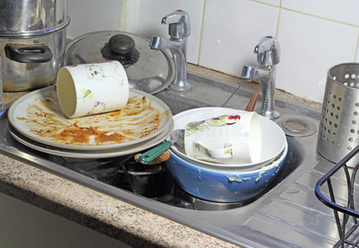

Clean-up
After you and your guest have empty plates and the parties over theres one thing left to do, clean up. It is important to clean your gear so that you can have a meal later that wont have taste remenents from the last meal you made. The last thing you want are crumbs left over from your apple crumble in your baked chicken especially if that was a week ago. There are many ways to clean your gear and your options are different depending on what you have or use.
Washing Dishes
Washing dishes is something you've probably done before. Whether for chores or for allowence this is key to keeping your kitchen clean and keeping pest from roaming the kitchen at night for crumbs. This is relativly simple as all you need is a sink, some dish soap, towels or paper towels, and a place to put your clean dishes after drying. After the dishes have been scrubbed within the sud water, dry them and put them away. That's all you need for washing dishes by hand. There are stands and appliances to help you dry them though as well as wash them.Dish Washer
If you don't feel like washing dishes or just dont have the time you can load all your dishes into a dish washer. This is the automated way to do so and all you need is a dish washer and dish washer liquid or a pod. After this turn it to the appropriate setting and let it wash. After they're done, let them dry for about an hour or so and put them away. Although this is the easy way, this can be ineffective as sometimes if the washer isnt strong enough some stubborn stains wont come off unless you manually remove them with elbow grease.